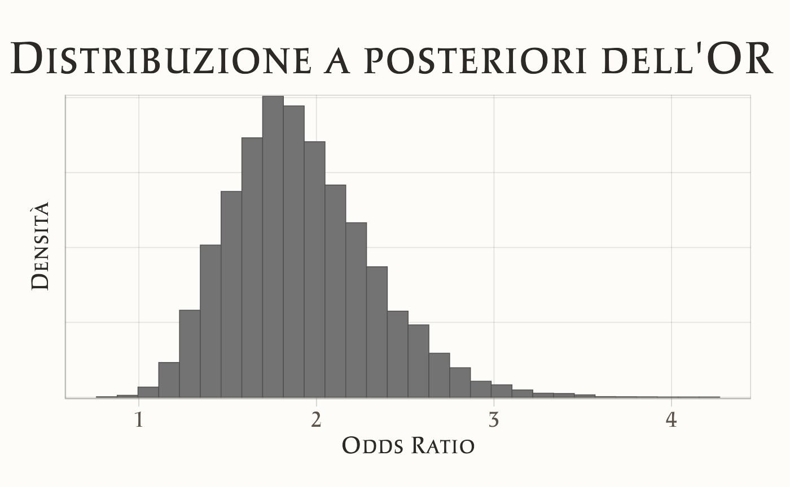
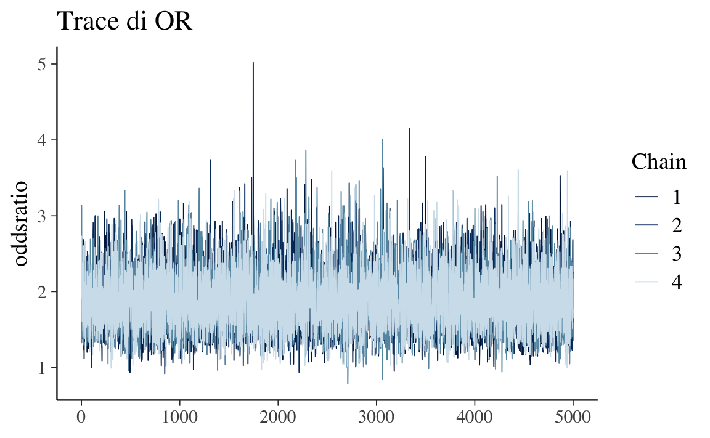
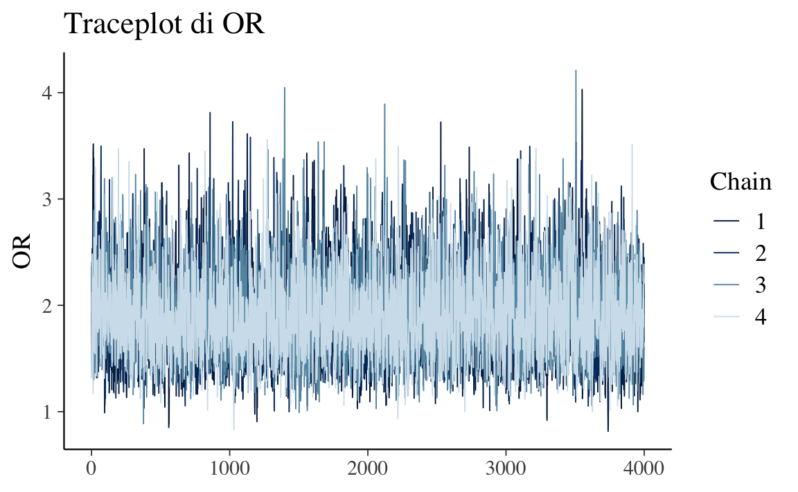
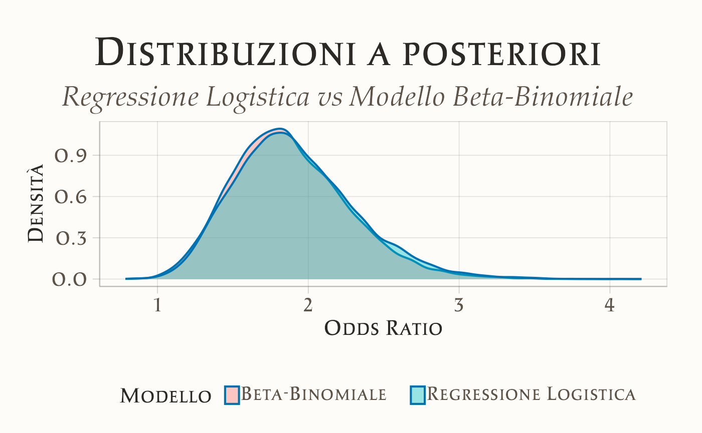

here::here("code", "_common.R") |>
source()
if (!requireNamespace("pacman")) install.packages("pacman")
pacman::p_load(cmdstanr, posterior, bayesplot, ggplot2, dplyr, tibble)
conflicts_prefer(posterior::ess_bulk)
conflicts_prefer(posterior::ess_tail)57 Analisi bayesiana dell’odds ratio
Prerequisiti
- Nozioni di base su Bernoulli/Binomiale, odds e odds ratio.
- Concetto di prior e posteriore.
Concetti e Competenze Chiave
- Modellazione binomiale di due proporzioni \((\theta_1,\theta_2)\).
- Priori debolmente informativi (Beta(2,2)) e loro interpretazione.
- Calcolo e lettura dell’OR e del log-OR.
- Riassunti posteriori (mediana, CrI), probabilità di superare una soglia (\(\Pr(\text{OR}>1)\)).
Preparazione del Notebook
Introduzione
Nelle scienze psicologiche e sociali ci interessa spesso capire se esiste un’associazione tra due variabili dicotomiche. Per esempio: gli studenti che hanno seguito un corso di preparazione hanno più probabilità di superare l’esame rispetto a chi non lo ha seguito?
Un modo naturale per quantificare questo tipo di relazione è l’odds ratio. È una misura intuitiva, perché confronta due probabilità trasformandole in termini di odds (rapporti di chance).
In questo capitolo vedremo:
- come si definiscono probabilità, odds e odds ratio;
- come si interpreta l’odds ratio in contesti psicologici;
- come stimarlo in ottica bayesiana, implementando un modello in Stan;
- come presentare i risultati con intervalli di credibilità.
57.1 Il contesto sperimentale
Nella prima metà del Novecento, Karl von Frisch si chiese se le api possedessero la visione dei colori. Per verificarlo, progettò esperimenti in cui le api potevano associare un colore a una ricompensa. Ispirandoci a una ricostruzione di Hoffmann et al. (2022), immaginiamo un disegno sperimentale semplificato:
- Gruppo sperimentale: api addestrate ad associare un disco blu a una soluzione zuccherina.
- Gruppo di controllo: api che non ricevono alcun addestramento.
Nella fase di test, la soluzione zuccherina viene rimossa, e si osserva quante volte le api si avvicinano al disco blu (evento critico).
I risultati osservati sono:
| Gruppo | Successi (scelta blu) | Totale |
|---|---|---|
| Sperimentale | 130 | 200 |
| Controllo | 100 | 200 |
La domanda è chiara: le api addestrate hanno odds maggiori di preferire il disco blu rispetto alle api non addestrate?
57.2 Da probabilità a odds
La probabilità di successo (scelta blu) nel gruppo sperimentale è:
\[ p\_1 = \frac{130}{200} = 0.65. \]
Gli odds corrispondenti sono:
\[ \text{odds}\_1 = \frac{p\_1}{1-p\_1} = \frac{0.65}{0.35} \approx 1.86. \]
Per il gruppo di controllo:
\[ p\_2 = \frac{100}{200} = 0.50, \quad \text{odds}\_2 = \frac{0.5}{0.5} = 1. \]
57.3 Odds ratio
L’odds ratio (OR) confronta i due odds:
\[ \text{OR} = \frac{\text{odds}\_1}{\text{odds}\_2} = \frac{1.86}{1} \approx 1.86. \]
Interpretazione: le api addestrate hanno odds circa 1.9 volte maggiori di scegliere il disco blu rispetto alle api non addestrate. Questo non significa che la loro probabilità sia il doppio, ma che il rapporto tra successi e insuccessi è quasi raddoppiato.
Ma quanto è credibile questa stima? È qui che l’approccio bayesiano diventa utile: invece di fermarci a una stima puntuale, otteniamo un’intera distribuzione a posteriori per l’OR.
57.4 Approccio bayesiano
Con l’approccio frequentista, l’odds ratio viene stimato come rapporto di stime puntuali, con un intervallo di confidenza ottenuto tramite approssimazioni asintotiche. Con l’approccio bayesiano, invece, otteniamo direttamente la distribuzione a posteriori dell’odds ratio. Questo ci permette di calcolare:
- la probabilità che l’OR sia maggiore di 1;
- la probabilità che cada in un intervallo di equivalenza (ROPE);
- intervalli di credibilità (ETI o HDI).
In questo modo il risultato non solo è più intuitivo, ma ci permette anche di rispondere a domande in termini probabilistici, ad esempio: qual è la probabilità che l’OR sia maggiore di 1?.
57.4.1 Relazione con la regressione logistica
Il collegamento chiave è la regressione logistica. Se modelliamo la probabilità di successo \(p_i\) come:
\[ \text{logit}(p_i) = \alpha + \beta x_i, \]
dove \(x_i\) è una variabile dicotomica (0 = controllo, 1 = trattamento), allora:
- \(\exp(\beta)\) è proprio l’odds ratio tra i due gruppi.
Questo significa che stimare un modello logistico equivale a stimare l’odds ratio, con il vantaggio di poter estendere facilmente il modello a più predittori.
57.4.2 Versione logistica
Rappresentiamo i dati individuali: ogni ape è codificata come 1 (ha scelto il blu) o 0 (non ha scelto il blu).
# Dati individuali
y <- c(rep(1, 130), rep(0, 70), # gruppo sperimentale
rep(1, 100), rep(0, 100)) # gruppo controllo
x <- c(rep(1, 200), rep(0, 200)) # 1 = sperimentale, 0 = controllo
data_list <- list(N = length(y), y = y, x = x)
glimpse(data_list)
#> List of 3
#> $ N: int 400
#> $ y: num [1:400] 1 1 1 1 1 1 1 1 1 1 ...
#> $ x: num [1:400] 1 1 1 1 1 1 1 1 1 1 ...57.4.3 Modello Stan
stancode_or <- "
data {
int<lower=1> N;
array[N] int<lower=0,upper=1> y; // esiti 0/1
vector[N] x; // gruppo (0/1)
}
parameters {
real alpha; // log-odds nel controllo
real beta; // differenza di log-odds (sperimentale vs controllo)
}
model {
alpha ~ normal(0, 5);
beta ~ normal(0, 5);
y ~ bernoulli_logit(alpha + beta * x);
}
generated quantities {
real OR = exp(beta);
}
"Compilazione ed esecuzione
stanmod_or <- cmdstanr::cmdstan_model(write_stan_file(stancode_or))
fit_or <- stanmod_or$sample(
data = data_list,
iter_warmup = 1000,
iter_sampling = 4000,
chains = 4,
seed = 123,
refresh = 0
)57.4.4 Interpretazione dei risultati
Riassunto dei parametri:
print(fit_or$summary(c("alpha","beta","OR")), n = Inf)
#> # A tibble: 3 × 10
#> variable mean median sd mad q5 q95 rhat ess_bulk ess_tail
#> <chr> <dbl> <dbl> <dbl> <dbl> <dbl> <dbl> <dbl> <dbl> <dbl>
#> 1 alpha -0.00 -0.00 0.14 0.14 -0.24 0.23 1.00 5152.63 6997.88
#> 2 beta 0.63 0.63 0.21 0.21 0.29 0.97 1.00 5183.41 7043.46
#> 3 OR 1.91 1.87 0.40 0.39 1.33 2.64 1.00 5183.41 7043.46- \(\alpha\) = log-odds di successo nel gruppo di controllo;
- \(\beta\) = differenza di log-odds tra i due gruppi;
- \(\exp(\beta)\) = odds ratio.
Distribuzione a posteriori dell’OR:
posterior::summarise_draws(
fit_or$draws("OR"),
mean, sd, ~quantile(.x, c(0.025, 0.5, 0.975))
)
#> # A tibble: 1 × 6
#> variable mean sd `2.5%` `50%` `97.5%`
#> <chr> <dbl> <dbl> <dbl> <dbl> <dbl>
#> 1 OR 1.91 0.40 1.25 1.87 2.82Questo riassume la media, la mediana e l’intervallo di credibilità (es. 95%) dell’odds ratio.
Visualizzazione:
bayesplot::mcmc_hist(fit_or$draws("OR")) +
ggtitle("Distribuzione a posteriori dell’odds ratio")
bayesplot::mcmc_areas(fit_or$draws("OR"), prob = 0.95) +
ggtitle("Intervallo di credibilità al 95% per l’odds ratio")
Il grafico mostra che l’odds ratio è ben sopra 1, con alta probabilità.
Interpretazione: è molto plausibile che l’addestramento aumenti le probabilità che le api scelgano il disco blu rispetto al gruppo di controllo.
57.4.5 Diagnostica essenziale
# Indicatori numerici chiave: Rhat ~ 1, ESS adeguati
posterior::summarize_draws(
fit_or$draws(c("alpha","beta","OR")),
"rhat", "ess_bulk", "ess_tail"
)
#> # A tibble: 3 × 4
#> variable rhat ess_bulk ess_tail
#> <chr> <dbl> <dbl> <dbl>
#> 1 alpha 1.00 5152.63 6997.88
#> 2 beta 1.00 5183.41 7043.46
#> 3 OR 1.00 5183.41 7043.46# Traceplot di controllo su OR
bayesplot::mcmc_trace(fit_or$draws("OR")) +
ggtitle("Traceplot di OR")
Se emergono problemi (Rhat > 1.01, ESS basso, divergenze riportate in output), conviene aumentare iter_warmup/iter_sampling, alzare adapt_delta o, in ultima istanza, riconsiderare i prior se sono eccessivamente stretti.
57.5 Versione binomiale con prior Beta
Finora abbiamo stimato l’odds ratio tramite la regressione logistica: \(\exp(\beta)\) fornisce direttamente l’OR tra i due gruppi. Un’alternativa altrettanto corretta — spesso preferita quando i dati sono naturalmente riassumibili in una tabella 2×2 — è modellare separatamente le due proporzioni \((\theta_1,\theta_2)\) con una binomiale e prior Beta debolmente informativi, e calcolare l’OR come trasformazione dei due parametri:
\[ \text{OR} \;=\; \frac{\theta_1/(1-\theta_1)}{\theta_2/(1-\theta_2)} \;=\; \exp\!\big(\operatorname{logit}(\theta_1)-\operatorname{logit}(\theta_2)\big). \]
Questa formulazione è didatticamente trasparente: stimiamo le due probabilità di successo e poi traduciamo il risultato nell’odds ratio. Con prior Beta(2,2) manteniamo coerenza con le impostazioni del capitolo (prior debolmente informativi).
57.5.1 Stan: due binomiali + prior Beta(2,2)
stancode_or_beta <- "
data {
int<lower=0> k1; int<lower=1> n1; // successi, prove sperimentale
int<lower=0> k2; int<lower=1> n2; // successi, prove controllo
}
parameters {
real<lower=0,upper=1> theta1;
real<lower=0,upper=1> theta2;
}
model {
theta1 ~ beta(2, 2);
theta2 ~ beta(2, 2);
k1 ~ binomial(n1, theta1);
k2 ~ binomial(n2, theta2);
}
generated quantities {
real logOR = logit(theta1) - logit(theta2);
real OR = exp(logOR);
}
"data_list_beta <- list(
k1 = 130, n1 = 200,
k2 = 100, n2 = 200
)
data_list_beta
#> $k1
#> [1] 130
#>
#> $n1
#> [1] 200
#>
#> $k2
#> [1] 100
#>
#> $n2
#> [1] 200Compilazione e campionamento:
stanmod_or_beta <- cmdstanr::cmdstan_model(write_stan_file(stancode_or_beta))
fit_or_beta <- stanmod_or_beta$sample(
data = data_list_beta,
iter_warmup = 1000,
iter_sampling = 4000,
chains = 4,
parallel_chains = 4,
seed = 123,
refresh = 0
)Riassunti posteriori e confronto con la logistica.
Cominciamo dai riassunti posteriori dell’OR nel modello Beta–Binomiale:
posterior::summarise_draws(
fit_or_beta$draws(c("theta1","theta2","logOR","OR")),
mean, sd, ~quantile(.x, c(0.025, 0.5, 0.975))
)
#> # A tibble: 4 × 6
#> variable mean sd `2.5%` `50%` `97.5%`
#> <chr> <dbl> <dbl> <dbl> <dbl> <dbl>
#> 1 theta1 0.65 0.03 0.58 0.65 0.71
#> 2 theta2 0.50 0.03 0.43 0.50 0.57
#> 3 logOR 0.61 0.20 0.21 0.61 1.00
#> 4 OR 1.88 0.39 1.23 1.84 2.73Ora affianchiamo i risultati dei due modelli (logistico vs Beta–Binomiale). In primo luogo, confrontiamo gli intervalli di credibilità dell’OR:
summ_logit <- posterior::summarise_draws(
fit_or$draws("OR"),
mean, sd, ~quantile(.x, c(0.025, 0.5, 0.975))
)
summ_beta <- posterior::summarise_draws(
fit_or_beta$draws("OR"),
mean, sd, ~quantile(.x, c(0.025, 0.5, 0.975))
)
list(logistico = summ_logit, beta_binomiale = summ_beta)
#> $logistico
#> # A tibble: 1 × 6
#> variable mean sd `2.5%` `50%` `97.5%`
#> <chr> <dbl> <dbl> <dbl> <dbl> <dbl>
#> 1 OR 1.91 0.40 1.25 1.87 2.82
#>
#> $beta_binomiale
#> # A tibble: 1 × 6
#> variable mean sd `2.5%` `50%` `97.5%`
#> <chr> <dbl> <dbl> <dbl> <dbl> <dbl>
#> 1 OR 1.88 0.39 1.23 1.84 2.73Per una verifica visiva, sovrapponiamo le densità posteriori dell’OR:
OR_logit <- as.numeric(fit_or$draws("OR"))
OR_beta <- as.numeric(fit_or_beta$draws("OR"))
tibble(
OR = c(OR_logit, OR_beta),
modello = rep(c("Logistico", "Beta–Binomiale"),
c(length(OR_logit), length(OR_beta)))
) |>
ggplot(aes(x = OR, fill = modello)) +
geom_density(alpha = 0.35) +
labs(title = "Posteriori dell'odds ratio: Logistico vs Beta–Binomiale",
x = "Odds Ratio", y = "Densità")
Infine, verifichiamo che la probabilità a posteriori di OR>1 sia sostanzialmente la stessa in entrambe le specificazioni:
Cosa aspettarsi?
I due approcci devono produrre risultati coerenti (entro le ovvie fluttuazioni Monte Carlo). Entrambi stimano, in modi diversi ma equivalenti sul piano inferenziale, la stessa quantità di interesse: l’odds ratio tra i due gruppi. La scelta pratica dipende dalla struttura dei dati e dagli obiettivi comunicativi:
- Se hai dati individuali (successo/insuccesso per soggetto) e vuoi estendere a covariate, la regressione logistica è naturale e scalabile.
- Se lavori con conteggi per cella (tabella 2×2) e vuoi la via più diretta alla misura d’effetto, il modello Beta–Binomiale è compatto e trasparente.
Entrambe le vie portano, correttamente, alla stessa conclusione sul valore di OR e sulla sua incertezza.
Riflessioni conclusive
In questo capitolo, abbiamo esplorato come applicare un approccio bayesiano per analizzare e interpretare l’odds ratio tra due proporzioni. Attraverso l’uso del modello statistico, siamo stati in grado di stimare la distribuzione a posteriori dell’odds ratio e di calcolare l’intervallo di credibilità.
I risultati ottenuti, supportati da un controllo diagnostico delle catene Markoviane, indicano che la differenza osservata tra i due gruppi è credibile e supportata dai dati. L’odds ratio stimato e il relativo intervallo di credibilità si collocano sopra il valore 1, indicando che, dati i nostri assunti, è altamente probabile che il gruppo sperimentale abbia odds maggiori rispetto al gruppo di controllo. L’approccio bayesiano si è dimostrato efficace, non solo per stimare i parametri di interesse, ma anche per quantificare l’incertezza associata a tali stime.
In sintesi, l’analisi bayesiana dell’odds ratio ha permesso di rispondere alla domanda di ricerca, confermando che le api mostrano comportamenti coerenti con una capacità di distinzione cromatica. L’approccio presentato in questo capitolo può essere esteso ad altre applicazioni, offrendo una struttura versatile per il confronto tra proporzioni in diversi contesti sperimentali.
Informazioni sull’ambiente di sviluppo
sessionInfo()
#> R version 4.5.1 (2025-06-13)
#> Platform: aarch64-apple-darwin20
#> Running under: macOS Sequoia 15.6.1
#>
#> Matrix products: default
#> BLAS: /Library/Frameworks/R.framework/Versions/4.5-arm64/Resources/lib/libRblas.0.dylib
#> LAPACK: /Library/Frameworks/R.framework/Versions/4.5-arm64/Resources/lib/libRlapack.dylib; LAPACK version 3.12.1
#>
#> locale:
#> [1] C/UTF-8/C/C/C/C
#>
#> time zone: Europe/Zagreb
#> tzcode source: internal
#>
#> attached base packages:
#> [1] stats graphics grDevices utils datasets methods base
#>
#> other attached packages:
#> [1] cmdstanr_0.9.0 pillar_1.11.0 tinytable_0.11.0
#> [4] patchwork_1.3.1 ggdist_3.3.3 tidybayes_3.0.7
#> [7] bayesplot_1.13.0 ggplot2_3.5.2 reliabilitydiag_0.2.1
#> [10] priorsense_1.1.0 posterior_1.6.1 loo_2.8.0
#> [13] rstan_2.32.7 StanHeaders_2.32.10 brms_2.22.0
#> [16] Rcpp_1.1.0 sessioninfo_1.2.3 conflicted_1.2.0
#> [19] janitor_2.2.1 matrixStats_1.5.0 modelr_0.1.11
#> [22] tibble_3.3.0 dplyr_1.1.4 tidyr_1.3.1
#> [25] rio_1.2.3 here_1.0.1
#>
#> loaded via a namespace (and not attached):
#> [1] gridExtra_2.3 inline_0.3.21 sandwich_3.1-1
#> [4] rlang_1.1.6 magrittr_2.0.3 multcomp_1.4-28
#> [7] snakecase_0.11.1 ggridges_0.5.6 compiler_4.5.1
#> [10] vctrs_0.6.5 reshape2_1.4.4 stringr_1.5.1
#> [13] pkgconfig_2.0.3 arrayhelpers_1.1-0 fastmap_1.2.0
#> [16] backports_1.5.0 labeling_0.4.3 utf8_1.2.6
#> [19] rmarkdown_2.29 ps_1.9.1 purrr_1.1.0
#> [22] xfun_0.52 cachem_1.1.0 jsonlite_2.0.0
#> [25] broom_1.0.9 parallel_4.5.1 R6_2.6.1
#> [28] stringi_1.8.7 RColorBrewer_1.1-3 lubridate_1.9.4
#> [31] estimability_1.5.1 knitr_1.50 zoo_1.8-14
#> [34] pacman_0.5.1 Matrix_1.7-3 splines_4.5.1
#> [37] timechange_0.3.0 tidyselect_1.2.1 abind_1.4-8
#> [40] yaml_2.3.10 codetools_0.2-20 curl_6.4.0
#> [43] processx_3.8.6 pkgbuild_1.4.8 plyr_1.8.9
#> [46] lattice_0.22-7 withr_3.0.2 bridgesampling_1.1-2
#> [49] coda_0.19-4.1 evaluate_1.0.4 survival_3.8-3
#> [52] RcppParallel_5.1.10 tensorA_0.36.2.1 checkmate_2.3.2
#> [55] stats4_4.5.1 distributional_0.5.0 generics_0.1.4
#> [58] rprojroot_2.1.0 rstantools_2.4.0 scales_1.4.0
#> [61] xtable_1.8-4 glue_1.8.0 emmeans_1.11.2
#> [64] tools_4.5.1 data.table_1.17.8 mvtnorm_1.3-3
#> [67] grid_4.5.1 QuickJSR_1.8.0 colorspace_2.1-1
#> [70] nlme_3.1-168 cli_3.6.5 svUnit_1.0.6
#> [73] Brobdingnag_1.2-9 V8_6.0.5 gtable_0.3.6
#> [76] digest_0.6.37 TH.data_1.1-3 htmlwidgets_1.6.4
#> [79] farver_2.1.2 memoise_2.0.1 htmltools_0.5.8.1
#> [82] lifecycle_1.0.4 MASS_7.3-65Bibliografia
Hoffmann, T., Hofman, A., & Wagenmakers, E.-J. (2022). Bayesian tests of two proportions: A tutorial with R and JASP. Methodology, 18(4), 239–277.